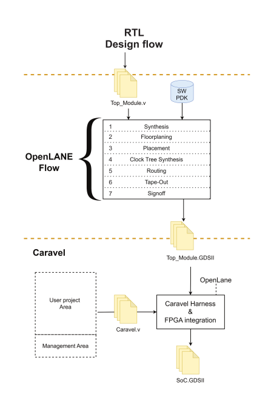

2024 Roadmap#
Project Objectives#
- Access to an opensource CAN-Bus IP in ans ASIC and its entire design, specifications, and documentations.
- Knowledge how to integrate any FPGA based design to an opensource ASIC with access to all logic designs, layout-data, and netlists.
- Using an open source PDK, skywater 130 nm, for the realization of CAN Controller would assess the reliability of openpdk manufacturing process and evaluate different reliability mitigation techniques.
- Provide free access to Datasheet, Schematic and Board Design for communicating with automotive and industrial devices.
- Enables software developers to effectively optimize their source codes based on fully accessible hardware details of CAN-Bus IP.
Below we provide the 2024 project roadmap.
The workflow followed to develop the SoC template with CAN IP is divided into 3 steps.
* The RTL design flow
* The OpenLANE flow
* The Caravel integration
The whole process is illustrated in below workflow:

...
Project Deliverables#
-
Total Estimated Duration: Duration of the whole project would be approximately 12 months.
-
Total Costs: Requested amount in Euro for the whole project is 50,000 Euros.
Milestone 1 — RTL design flow#
- Estimated duration: 2 months
- Costs: 5,000 Euros
- Tasks: This process starts with the common RTL design flow in which each module along with its testbench is developed with HDL language. Then each module is tested, synthesized, and wrapped in a top module, which is also tested. Yosys can be used to test and synthesize each module.
Though CTUCAN-FD IP was synthesized in FPGA in 2023, in order to assess the reliability of Open source Process Design Kit (PDK), we need to extend multiple reliability solutions at logic level such as different degrees of replication and ECC around register files in order to reliably detect whether errors occur, and in case they do, whether they can be corrected. We plan to extend the RTL logic with a redundant Reliability Monitoring Unit consisting of detailed event counters for each of the registers.
...
Milestone 2 — OpenLANE flow#
- Estimated Duration: 4 months
- Costs: 15,000 Euros
- Tasks: After the RTL design flow, the Verilog files will be loaded to OpenLANE with the proposal to make the flow RTL to GDSII with the best layout optimization, additionally, OpenLANE requires the Process Design Kit (PDK) technology, Skywater130 in this case, then OpenLANE generates the GDSII files of our module.
...
Milestone 3 — Caravel integration#
- Estimated Duration: 3 months
- Costs: 15,000 Euros
- Tasks: Finally, the integration will be done through Caravel, OpenLANE will be used to combine caravel with the Top Module CAN gds file.
Top Module CAN refers to the module that combines and routes CAN IP.
...
Milestone 4 — Chip fabrication#
- Estimated Duration: 2 months
- Costs: 10,000 Euros
- Tasks: Next step is to get chip fabrication and packaging of our design in ASIC chip by companies like Efabless.
Milestone 5 — Board Development#
- Estimated Duration: 1 months
- Costs: 5,000 Euros
- Tasks: Final step is to get carrier board developed with newly fabricated chip with CAN design and access all the chip signals.
.
...